Table des matières
Interfaces des 48 Faders
Il y a deux espaces dédiés aux Faders dans WhiteCat:
- une version étendue, nommée l'Espace Faders
- une vision synthétique, en fenêtre, nommée Minifaders
On accède à la premiere avec la touche [F10] et à la seconde avec [shift-F10].


L'espace Faders permet un travail plus précis et pointu que les Minifaders.
Les Minifaders intègrent une vision globale, les Locks preset et les commandes All at Zero. Voir: la fenêtre des Minifaders
Navigation dans les 48 Faders
Pour déplacer le bandeau des faders, il faut utiliser l'ascenceur.
Celui ci comprend deux zônes:
- la zône gauche est pour controller de manière horizontale l'ascenceur
- la zône droite est pour controller de manière verticale l'ascenceur
Déplacement dans les faders:
Il suffit, soit de clicker sur le numéro de tranche désirée, soit de déplacer l'ascenceur horizontal.
Pour échapper la fenêtre des masters du plan de travail, utiliser l'ascenceur de manière verticale.
Escamoter ou faire réapparaitre la zône Faders: clicker [Faders] ou taper [F10].
Affectation midi de l'ascenceur
L'ascenceur horizontal est pilotable en signal control-change, ce qui permet avec un rotatif de se déplacer rapidement sur les 48 faders.
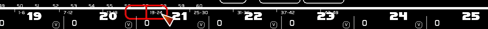
Rôle du Fader
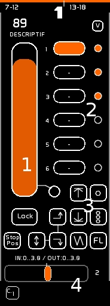
Les 48 Faders de White Cat peuvent être appelés aussi des Masters.
A la différence des Masters classiques que l'on retrouve dans les consoles de théâtre, les faders de White Cat comprennent 6 docks.
C'est dans les docks que l'on stocke:
-des états lumineux fixes
-des états lumineux dynamiques
Selon le dock sélectionné, la sortie du Fader est différente.
Si le dock comprend les circuits 1 et 2, et le dock 2 les circuits 3 et 4, selon le dock choisi la sortie issue du master comprendra les circuits 1 et 2 **ou** 3 et 4.
Un Fader est constitué:
- d'une tirette permettant de contrôler son intensité, avec un descriptif du dock sélectionné, et un bouton de Lock
- de 6 docks. Le dock sélectionné apparait en orange.
- d'un espace LFO ( générateur de mouvements sinusoidaux affectant son intensité) et de commandes de boucles et de flash
- d'un accéléromètre qui affecte les LFO
Edition du Fader
Chargement, modification d'un état lumineux fixe dans un Dock
A la volée
Pour charger dans un dock un état lumineux fixe:
- créer son état lumineux ( voir L'espace Circuits ), soit sur scène, soit en Blind
- clicker [STORE] ou taper la touche [F1]
- puis clicker le dock où enregistrer cet état lumineux
Modification de l'état lumineux fixe contenu dans un dock:
- sélectionner les circuits, les mettre à l'intensité désirée.
Seuls les circuits sélectionnés seront enregistrés dans ce nouvel état. Les autres circuits ne seront pas modifiés.
- clicker [MODIFY] ou taper la touche [F2]
- puis clicker le dock à modifier
Les états lumineux issus des Faders (circuits affichés en orange) ne sont pas pris en compte.
D'une mémoire
Il est possible d'affecter une mémoire à un dock:
- taper le numéro de mémoire
- clicker [STORE] ou taper la touche [F1]
- puis clicker le dock à modifier
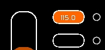
Si la mémoire par la suite est détruite, le dock clignotera.
Si la mémoire est modifiée vous n'avez pas à la recharger dans le dock.
Le descriptif du dock est relié à celui de la mémoire.
Attention !
Concernant l'édition des mémoires, celle-ci sont accessibles et modifiables depuis la fenêtre du Séquentiel ( F9) et l'usage des touches de saisie rapide ( Ctrl-F1 pour ré-enregistrer la mémoire sur scène, SHIFT-F1 pour créer une nouvelle mémoire, etc… voir Récapitulatif commandes clavier).
Certains utilisateurs ont mis un peu de temps à comprendre que l'injection de mémoires dans un dock était un l'une des multiples façons de travailler avec les faders. Le travail des mémoires doit être donc envisagé dans son ergonomie depuis la fenêtre du séquenciel.
Report d'un état lumineux dans un Dock
[Report] permet de reporter tous les niveaux, issus des faders et du séquenciel, dans le dock sélectionné.
Le fader de ce dernier est mis à full, les autres faders sont mis à zéro.
L'intérêt de Report est de pouvoir créer un état lumineux avec différents faders, et de tout reporter dans un seul et unique Fader ( pour faire un noir en concert, par exemple, ou créer ses lumières avec des masters).
- clicker [Report] ou taper la touche [F3]
- clicker le dock où faire le report
[Report] ne fonctionne que sur scène et pas en Blind.
Nettoyer un Dock
- Enclencher le mode Clear en clickant [CLEAR] ou en tapant [F4]
- clicker le dock à remettre à zéro
!un dock vide apparait avec un petit [-]
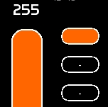
Donner un descriptif à un Dock
- clicker [NAME] ou taper [F5]
- taper votre texte
- clicker le dock auquel affecter le descriptif

(voir La fenêtre Name)
Nettoyer un FADER et tous ses Dock
- Enclencher le mode Clear en clickant [CLEAR] ou en tapant [F4]
- clicker le fader à remettre à zéro
Inspecter le contenu d'un Dock
Le bouton [VIEW] permet au survol d'un dock d'afficher le contenu de celui-ci.


Autres types de chargements
On peut charger dans un dock, outre des circuits et des mémoires:
- un chaser
- un dock color ( le résultat de la roue de trichromie)
- le résultat du tracking-vidéo
- du dmx venant de l'extérieur, en protocole art-net
- du dmx-in venant d'une carte dmx-in
Un Fader peut avoir aussi des comportements très spéciaux:
- pilotage du volume, du panoramique, ou du pitch d'un player audio
- mode Direct-Channel ( liaison du fader à un circuit sur la conduite)
Mode Direct Channel
Le mode Direct Channel permet au fader ( si le dock sélectionné est en Direct Channel) de piloter un circuit et d'être piloté par celui-ci. Ce n'est pas le mode que l'on connait sur les consoles traditionnelles. On affecte au dock un circuit dont il devient maître et esclave.
Ce mode a été créé pour les besoins d'un béta testeur, de façon à répondre à sa problématique avec une BCF2000:
“White Cat a le grand avantage d'avoir un retour midi, mais je ne parviens pas à prendre en main un circuit enregistré sur la conduite avec la BCF j'aimerai que les faders de la BCF suivent l'évolution de niveaux d'un circuit afin de pouvoir après le transfert monter ou descendre sa valeur et reprendre le prochain transfert comme sur un presto ”
Affectation d'un circuit à un dock:
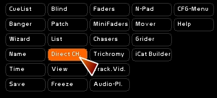
- se mettre en mode [ Direct Ch. ]
- sélectionner le circuit
- F1 ou clicker [STORE]
- clicker le dock où stocker le circuit sélectionné
Le mode [ Direct Ch. ] est uniquement pour l'enregistrement, et permet de préciser le type d'action que fait [F1].
Ici ce dock met le Fader en relation directe avec le circuit 47:
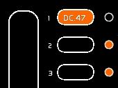
Comportement du Fader mis en mode [Direct Ch.]:
- le fader prend la valeur du circuit lorsque celui-ci n'est pas manipulé. Celà veut dire qu il prend la valeur du circuit manipulé dans le Buffer Saisie ( sur scène): crossfade, appel niveaux clavier et flèches, molette souris.
- mis en MidiOut, il renvoie à la bcf la valeur pour que tu sois raccord.
- lorsqu'on manipule le fader, par souris, midi ou LFO, la valeur du fader est alors affectée au circuit, sauf si il y a crossfade.
- pour modifier la valeur pendant crossfade: passer par les flèches ou la molette souris en sélectionnant le circuits de figure.
FX mode d'un fader
( version 0.8.3 )
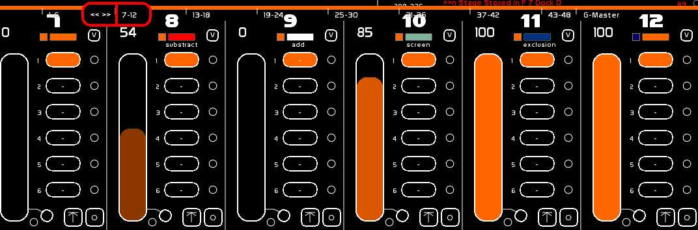
Choix de la restitution des niveaux
Le calcul du rendu d'un fader peut être rendu désormais vers deux espaces:
- le buffer des Faders ( en orange)
- le buffer du séquenciel ( en bleu)
La sélection de l'envoi du contenu du Fader se fait en clickant le petit carré sous le chiffre du Fader.
- En orange le fader restitue ses niveaux dans le buffer des Faders.
- En bleu dans le buffer du séquenciel, APRES calcul des circuits sur scène et en preset ( donc il influe sur le résultat d'un crossfade).
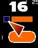
Lfo
Les LFO permettent:
- de monter à full ou descendre à zéro sur une base de temps un fader
- de monter/descendre sur une base de temps un fader
- de boucler cette action
- de linker ces montées/descentes vers le dock précédent ou le dock suivant, et permettre de cette manière soit une mini-séquence, soit un mini-chaser
Chaque dock est donc timable, et comporte un temps de Delay In, de Delay Out, de In et de Out.
Affecter un temps à un Dock
Pour affecter un temps à un Dock, il faut utiliser la fenêtre Time.
- Afficher Time
- Bouger la roue pour obtenir le temps désiré
- sélectionner le temps à appliquer: D.In/Out ou In/Out
- clicker [AFFECT]
- clicker le dock pour affecter ce temps.
Le temps affecté au dock sélectionné apparait au dessus de l'accéléromètre.
Ce temps ( Delays et In et Out) s'affiche avec sa transformation par l'accéléromètre.
Le temps affiché dans ce dock montre un Delay In de 3 secondes, un IN de 2 secondes, un Delay Out de 3 secondes, un OUT de 5 secondes.

Utilisation des LFO
Les LFO s'utilisent sur un Go, en clickant l'action voulue. Si l'action est déjà en cours, re-clicker arrête l'action et laisse le Fader au niveau présent.
Types de LFO
Il y 3 types de LFO:
- UP ( montée)
- DOWN (descente)
- SAW (scie: montée-descente)
- UP:
Si l'intensité du LFO est inférieure à FULL, il montera à Full sur la base de temps contenue dans le dock, quelque soit sa position de départ.
- DOWN:
Si l'intensité du LFO est supérieure à zéro, il descendra sur la base de temps contenue dans le dock, quelque soit sa position de départ.
- SAW:
Si l'intensité du LFO est égale est inférieure à FULL, le fader montera puis descendra, sur la base de temps contenue dans le dock.
Si l'intensité du LFO est égale est égale à FULL, le fader descendra, sur la base de temps contenue dans le dock. Le mouvement s'arrêtera.
Mise en boucle d'un LFO
En face du dock sélectionné, il y a une petite case ronde à cocher.
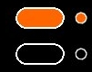
Quand cette case est cochée, le mode Link de ce dock est enclenché.
- Si le Link de ce dock est coché, le mouvement se répètera sur lui même, permettant une boucle du mouvement choisi ( UP, DOW, SAW).
- Si le Link de ce dock n'est pas enclenché, la séquence de mouvement ne se jouera qu'une seule fois.
- Si les cases NEXT DOCK ou PREVIOUS DOCK sont enclenchés, la fin du mouvement mène au prochain dock.
Commandes à la volée de LFO et bouton de Flash
0.7.6.6
- Loop One: Le premier bouton permet d'enclencher/désenclencher le loop sur le dock actif
- Loop All: Le deuxième bouton permet d'enclencher/désenclencher le loop sur tous les docks. Si un dock est en Loop, tous les docks sont mis en Loop Off. Inversement, si tous les docks sont en Loop Off, ils seront en Loop On.
- Flash: Ce bouton permet de flasher le fader. Si vous avez un LFO qui tourne en même temps, les calculs continuent de se faire en arrière plan, ce qui permet de retrouver au relâchement du flash l'état du fader comme si il n'y avait rien eu ( important pour le rythme, par ex).
Ces commandes sont aussi affectables en midi.
StopPos d'un LFO
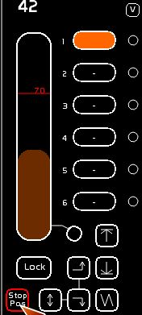
Vous avez remarqué que les descentes et montées de Faders se font de 0 à Full.
Il est possible pour des encodages précis ( effets channel times ou remote des niveaux son ) d'avoir des positions de fin autres que 0 et Full.
Le bouton de StopPosition permet donc de définir une butée lors de l'action LFO sur un fader.
Cette butée bloque le fader à la position d'arrivée sur la base des règles suivantes:
- cette butée n'affecte pas le temps de LFO du fader. Si on définit une butée à 50%, la moitié du temps de déroulement du LFO, le fader fera sa variation de niveau, l'autre moitié il est bloqué en butée.
- quand le LFO est en UP, la butée est la butée haute. Le fader n'ira pas à un niveau plus haut que celui définit par le StopPos.
- quand le LFO est en DOWN, la butée est la butée basse. Le fader n'ira pas à un niveau plus bas que le StopPos.
- quand le LFO est en SAW, la butée est basse.
- il n'y a qu' un seul StopPos par fader.
Définir un StopPos
A la main:
- s'assurer que la chaine de caractères est vide en faisant [ESC]
- bouger le fader au niveau voulu
- clicker [STORE] ou taper [F1]
- clicker [StopPos]
En aveugle:
- taper la valeur désirée
- clicker [STORE] ou taper [F1]
- clicker [StopPos]
Activer/Désactiver le mode StopPos
Clicker la case StopPos pour qu'elle soit rouge ( actif) / blanche (inactive). Si le StopPos du fader est enclenché, la valeur apparait en rouge.
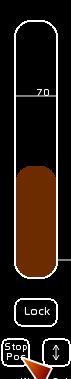
Vider le contenu du StopPos
Pour des questions d'affichage, vous désirez effacer les données de StopPos du Fader.
- clicker [CLEAR] ou taper [F4]
- clicker [StopPos]
Séquence et mini-chaser avec NEXT DOCK et PREVIOUS DOCK
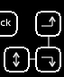
NEXT DOCK et PREVIOUS DOCK ne fonctionnent que si le Link du Dock actif est enclenché.
Le passage des mouvements du Fader s'arrêtera lorsque le Dock du dernier mouvement exécuté aura son Link inactif.
La flèche Haut-bas permet de boucler le mouvement en aller retour: quand on arrive au dock 6 on repart en arrière, quand on arrive au dock 1, on repart en avant.
SEQUENCE
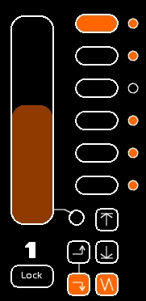
Sur cette image, NEXT DOCK est enclenché.
Le Link est enclenché sur les Docks 1, 2, 4, 5 et 6.
- Le mouvement SAW est en cours, depuis le premier Dock.
- On passera au deuxième Dock, avec un mouvement SAW, puis au troisième Dock.
- Au troisième Dock, le mouvement SAW est effectué.
- Le mouvement s'arrête alors, le 3ème Dock n'ayant pas de Link enclenché.
Avec cet arrêt nous avons donc une séquence de mouvements, qui n'est pas bouclée.
MINI-CHASER
Si on désire boucler en continu ces 3 docks, et ainsi créer un mini-chaser:
- Activer le Link sur le dock 3.
- Vider avec [CLEAR] (touche [F4]) les docks 4, 5 et 6
- Affecter un temps de zéro secondes pour les IN, OUT, Delays IN et OUT aux docks 4, 5, 6.
Vous pouvez aussi décider un temps d'attente avant la reprise des 3 premiers Docks, en ajoutant le temps désiré sur un dock vide.
Accéléromètre
L'accéléromètre, permet d'accélerer, ralentir, voir pauser la vitesse enregistrée dans le dock. Ce, en temps réel.
- La valeur 0 représente la normale.
- En allant vers la gauche, on ralentit le mouvement ( de -1 à -63).
La valeur -8 représente un moins l'infini, donc la pause.
- En allant vers la droite, on accélère le mouvement.
Attribution d'une courbe à un fader
On peut désormais attribuer une des 16 courbes du patch aux faders.
Par défaut chaque fader est en courbe 1.
La courbe permet:
- d'obtenir des automatisations moins linéaires en lumière: faire “claquer” un LFO, ou mourrir en arrondi ….
- donner un ressenti moins mécanique d'une transition automatisée
- de piloter l'audio de manière fine sur les transitions ( fade in / fade out ) où le son ne se satisfait pas d'une progression linéaire du signal. C'est d'ailleurs essentiellement pour cette raison que l'insertion des courbes a été faite pour les faders.
Affecter une courbe à un fader:
- Editer la courbe désirée ( de préférence uen autre courbe que la 1) dans le patch (Shift-P)
- Taper le numéro de courbe ( de 1 à 16 )
- Taper [F1]
- Clicker la case de courbe du Fader. Cette case est située SOUS l'accéléromètre du fader.
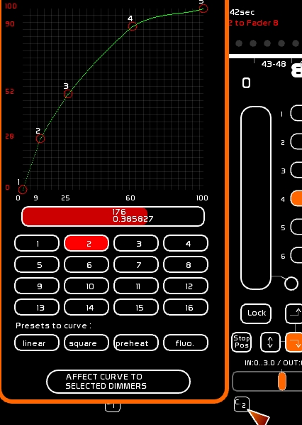
Embarquement d'un chaser
Lorsque le dock sélectionné comprend un chaser, les commandes PLAY, SEEK TO BEG, LOOP et AUTOLAUNCH apparaissent sous l'accéléromètre.

Autolaunch permet de controler le play du chaser depuis le fader.
Lorsque l'autolaunch est enclenché:
- le fader est à 0 et monte: Play du chaser embarqué
- le fader est mis à 0: Stop du chaser embarqué et Seek en position de début de manière automatique
Pilotage des faders audio par les Faders Lumière
Il est possible d'assigner à un dock le contrôle d'un des 3 contrôles d'un lecteur audio:
- volume
- pan
- pitch
Le Fader devient de couleur bleue et bypass les commandes midi affectées au Player, ainsi que Banger.
voir AudioPlayers

Concernant la gestion son, si vous utilisez les faders pour piloter le son en automatisé, pensez à attribuer une courbe non linéaire au fader, de façon à avoir une courbe ronde pour les entrées et sorties du son.
Affectation MIDI
On peut contrôler en midi:
- le fader
- le défilement sec des docks en Dock + / Dock -, en affectant à un bouton le dock 1 et le dock 2.
- l'accéléromètre
- les fonctions lfo: UP / DOWN / SAW / NEXT DOCK / PREVIOUS DOCK / UPDOWN / STOP POS/ LOOP ONE / LOOP ALL / FLASH
Voir: Configuration Midi et Affectations Midi
Emission MIDI
En enclenchant cette capsule, on renvoie le signal midi affecté au fader vers la sortie midi.
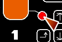
Celà permet de piloter manuellement un crossfade sur un logiciel vidéo par exemple, ou un niveau son vers un logiciel comme SeqCon, ou de pouvoir travailler en manuel avec tantôt sa BCF2000, tantôt à la souris, sans saute ni problème de rafraichissement…
MIDI MUTE (local)
(versio 0.8.2 )
En enclenchant cette capsule, vous mutez l'entrée midi spécifique de ce fader, et affichez le niveau midi le pilotant.
Si vous ne possédez pas de surface de controle midi motorisée, cela vous permet de recaler vos niveaux midi suite à une action automatisée dans le logiciel (lfos, banger), sans toucher le niveau du fader. Vous évitez ainsi les sautes.
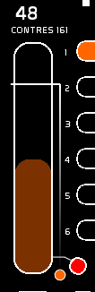
En enclenchant Midi MUTE (general) vous activez toutes les pastilles MIDI MUTE (local) du logiciel.
Raccourci d'enregistrement, via MIDI , touche midi-do-order pour le live
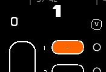
La touche midi-do-order se présente sous la forme d'un petit carré marqué d'une flèche vers le bas.
Si vous travaillez avec une surface de contrôle midi, il est possible de simplifier les manipulations suivantes:
- fonction [F1] [STORE] à un dock
- fonction [F2] [MODIFY] à un dock
- fonction [F3] [REPORT] à un dock
- fonction [F4] [CLEAR] à un dock
- fonction [F5] [NAME] à un dock
- Time Affect à un dock ( Affect sélectionné)
Appeler en midi cette fonction permet de valider l'opération pour le dock courant du Fader, et remplacer:
-touche [F1] pressée - sélection à la souris du dock - confirmation -
par
-touche [F1] pressée - sélection et enregistrement du Fader ( dock actif) via la touche midi-do-order
Affecter la commande midi à midi-do-order
- Sélectionner le menu [MIDI_CFG]
- Choisir la page [BUTTON CONFIG]
- Choisir le mode ( 1/1 , tranches de 8, les 48 )
- Appuyer la touche midi désirée
- Clicker le bouton midi-do-order
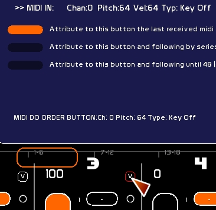